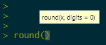

Code
round(10.32, digits = 0)[1] 10Base R is what you download from CRAN. You might think of it as classic R. A short introduction of ‘the basics’ is provided below.
R is a functional programming language where functions ‘do things’ to objects. What they do is dependent upon the class/type and attributes of the objects that go into the function and also on the arguments of the function that can be changed dependent upon the task.
For example, try typing the following into the R Console, which is the bottom left panel of R Studio. Type it alongside the prompt symbol, > then hit Enter/Return.
This calls the function round(), which is operating on the numeric object, 10.32. The parameter digits specifies the number of digits to round to. It is set to zero in the example above. Since digits = 0 is the default value for the function, we could just write
and obtain the same answer. I know that digits = 0 is the default value because, as I type the name of the function into the R Console, I see the arguments of the function and any default values appear.

We can also find out more about the function, including some examples of its use, by opening its help file.
Because digits = 0 is the default value, if we want to round to one digit, we need to be explicit.
The following also works but only because it preserves the order of the arguments in the function.
In these examples, both the input to and output to the function are a numeric vector of type double. The input is:
The output is:
[1] "numeric"[1] "double"Note how a function can be wrapped within a function, as in the example above: class(round(...)).
Although 10.32 is a numeric vector of length 1,
the round() function can operate on numeric vectors of other lengths too.
Here the combine function, c() is used to create a vector of length 7, which is the input into round(). The output is of length 7 too.
We can write our own functions. The following will take a number and report whether it is a prime number or not.
[1] TRUE[1] FALSE[1] TRUEWarning in is.prime(-1): Please enter an integer number above 1[1] NAWarning in is.prime(3.3): Please enter an integer number above 1[1] NAThere is quite a lot to unpack here. First of all the function takes the form
where x is the input into the function.
Statements such as if(x == 2) are logical statements: if(...) then do whatever follows. Where what is to be done spans over multiple lines, they are enclosed (like the function itself) by ‘curly brackets’, {...}.
The statement if(x < 2 | x %% floor(x) != 0) in the function is also a logical statement with the inclusion of an or statement, denoted by |. What it is checking is whether x < 2 or if x is a fraction. Had we needed to have both conditions to be met, then an and statement would be used, denoted by & instead of |. Note that ! means not, so != tests for not equal to and is the opposite of ==, which tests for equality.
Where it says, 2:(x-1), this is equivalent to the function, seq(from = 2, to = (x-1), by = 1). It generates a sequence of integer numbers from 2 to (x-1).
ifelse is another logical statement. It takes the form, ifelse(condition, a, b): if condition is met then the result is a, else it is b. In the prime number function it is checking whether dividing \(x\) by any of the numbers from 2 to \(x-1\) generates a whole number.
Finally, the function return() returns an output from the function; specifically, a logical vector of length 1 that is TRUE, FALSE or NA dependent upon whether \(x\) is or is not a prime number, or if it is not a whole number above 1.
Note that in newer versions of R, functions can also take the form,
Therefore the following is exactly equivalent to before.
[1] TRUEThere are lots of functions for R and I often forget what I need. Fortunately, there is also a large user community too and so a quick web search often helps me find what I need.**
Our function that checks for a prime number is stored in the object is.prime.
We could store its output as a logical object. In the following code that object is called x,
We have already seen that some objects are numeric.
This presently is of type double (i.e. it allows for decimal places even where they are not required)
but could be converted to class integer.
Other classes include character. Note the difference between the length() of a character vector and the number of characters, nchar(), that any element of that vector contains.
[1] "Mapping and Modelling in R"[1] 1[1] 26[1] "character"[1] "Mapping and Modelling in R with Richard Harris"[1] 1[1] 46[1] "character"[1] "Mapping" "and" "Modelling" "in" "R" [1] 5[1] 7 3 9 2 1[1] "character"A matrix
[1] 3[1] 3 [,1] [,2] [,3]
[1,] 1 4 7
[2,] 2 5 8
[3,] 3 6 9[1] "matrix" "array" [,1] [,2] [,3]
[1,] 1 2 3
[2,] 4 5 6
[3,] 7 8 9[1] "matrix" "array" [,1] [,2] [,3]
[1,] 1 2 3
[2,] 4 5 6
[3,] 7 8 9 [,1] [,2] [,3]
[1,] TRUE TRUE TRUE
[2,] TRUE TRUE TRUE
[3,] TRUE TRUE TRUE[1] "matrix" "array" [1] "logical"Note that # indicates a comment in the code. If you cut and paste the line z <- t(x) # Tranpose x into the Console then the command z <- t(x) will be run, whereas the comment # Tranpose x will be ignored as it is just there for information.
A data.frame is a table of data, such as,
Day Date Month Year
1 Mon 20 June 2022
2 Tues 21 June 2022
3 Wed 22 June 2022
4 Thurs 23 June 2022
5 Fri 24 June 2022
6 Sat 25 June 2022
7 Sun 26 June 2022[1] "data.frame"[1] 4[1] 7[1] 4Note that the length of each column should be equal. The following will generate an error because the Date column is now too short. You might wonder why the Month and Year columns were fine previously. It is because R recycled them the requisite number of times (i.e. it gave all the rows the same value for Month and Year).
A list is a more flexible type of object that can hold together various other types of object. For example,
only works because the 1:3 have been coerced from numbers in x to characters in y – note the " " around them, which shows they are now text. On the other hand,
creates a ragged list of two parts:
The first has the character "a" in it.
The second has the numbers 1 to 3 in it.
Note that the length of the list is the length of its parts.
[[1]]
[1] "a"
[[2]]
[1] 1 2 3
[[3]]
Day Date Month Year
1 Mon 20 June 2022
2 Tues 21 June 2022
3 Wed 22 June 2022
4 Thurs 23 June 2022
5 Fri 24 June 2022
6 Sat 25 June 2022
7 Sun 26 June 2022[1] 3This should not be confused with the length of any one part.
Throughout this page I have used the assignment term <-, as in x <- as.integer(1:3) and y <- list("a", x, df) and so forth. This is used to assign the result of a function to an object. You can, if you prefer use =. For example, all the following achieve the same outcome.
Personally, I tend to avoid using = so not to confuse assignments with arguments,
and not assignments with logical statements,
and also, albeit pedantic, to avoid the following sort of situation which makes no sense mathematically…
… but does in terms of what it really means:
Still, which you use is a matter of personal preference and, of course, = has one less character than <- to worry about!
---
title: "Base R"
---
## Introducing Base R
Base R is what you download from [CRAN](https://cran.r-project.org/){target="_blank"}. You might think of it as classic R. A short introduction of 'the basics' is provided below.
## Functions
R is a functional programming language where functions 'do things' to objects. What they do is dependent upon the class/type and attributes of the objects that go into the function and also on the arguments of the function that can be changed dependent upon the task.
For example, try typing the following into the R Console, which is the bottom left panel of R Studio. Type it alongside the prompt symbol, `>` then hit `Enter`/`Return`.
```{r}
round(10.32, digits = 0)
```
This calls the function `round()`, which is operating on the numeric object, `10.32`. The parameter `digits` specifies the number of digits to round to. It is set to zero in the example above. Since `digits = 0` is the default value for the function, we could just write
```{r}
round(10.32)
```
and obtain the same answer. I know that `digits = 0` is the default value because, as I type the name of the function into the R Console, I see the arguments of the function and any default values appear.

We can also find out more about the function, including some examples of its use, by opening its help file.
```{r, eval=FALSE}
?round
```
</br>
Because `digits = 0` is the default value, if we want to round to one digit, we need to be explicit.
```{r}
round(10.32, digits = 1)
```
The following also works but only because it preserves the order of the arguments in the function.
```{r}
round(10.32, 1)
```
In these examples, both the input to and output to the function are a `numeric` vector of type `double`. The input is:
```{r}
class(10.32)
typeof(10.32)
```
The output is:
```{r}
class(round(10.32, digits = 1))
typeof(round(10.32, digits = 1))
```
Note how a function can be wrapped within a function, as in the example above: `class(round(...))`.
Although `10.32` is a numeric vector of `length` 1,
```{r}
length(10.32)
```
the `round()` function can operate on numeric vectors of other lengths too.
```{r}
round(c(1.1, 2.2, 3.3, 4.4, 5.5, 6.6, 7.7))
```
Here the combine function, `c()` is used to create a vector of length 7, which is the input into `round()`. The output is of length 7 too.
```{r}
length(round(c(1.1, 2.2, 3.3, 4.4, 5.5, 6.6, 7.7)))
```
### Writing a new function
We can write our own functions. The following will take a number and report whether it is a prime number or not.
```{r}
is.prime <- function(x) {
if(x == 2) return(TRUE)
if(x < 2 | x %% floor(x) != 0) {
warning("Please enter an integer number above 1")
return(NA)
}
y <- 2:(x-1)
ifelse(all(x%%y > 0), return(TRUE), return(FALSE))
}
is.prime(2)
is.prime(10)
is.prime(13)
is.prime(-1)
is.prime(3.3)
```
There is quite a lot to unpack here. First of all the function takes the form
```{r}
f <- function(x) {
...
}
```
where `x` is the input into the function.
Statements such as `if(x == 2)` are logical statements: `if(...)` then do whatever follows. Where what is to be done spans over multiple lines, they are enclosed (like the function itself) by 'curly brackets', `{...}`.
The statement `if(x < 2 | x %% floor(x) != 0)` in the function is also a logical statement with the inclusion of an `or` statement, denoted by `|`. What it is checking is whether `x < 2` **or** if `x` is a fraction. Had we needed to have both conditions to be met, then an `and` statement would be used, denoted by `&` instead of `|`. Note that `!` means not, so `!=` tests for not equal to and is the opposite of `==`, which tests for equality.
Where it says, `2:(x-1)`, this is equivalent to the function, `seq(from = 2, to = (x-1), by = 1)`. It generates a sequence of integer numbers from `2` to `(x-1)`.
`ifelse` is another logical statement. It takes the form, `ifelse(condition, a, b)`: if `condition` is met then the result is `a`, else it is `b`. In the prime number function it is checking whether dividing $x$ by any of the numbers from 2 to $x-1$ generates a whole number.
Finally, the function `return()` returns an output from the function; specifically, a logical vector of length 1 that is `TRUE`, `FALSE` or `NA` dependent upon whether $x$ is or is not a prime number, or if it is not a whole number above 1.
Note that in newer versions of R, functions can also take the form,
```{r}
f <- \(x) {
...
}
```
Therefore the following is exactly equivalent to before.
```{r}
is.prime <- \(x) {
if(x == 2) return(TRUE)
if(x < 2 | x %% floor(x) != 0) {
warning("Please enter an integer number above 1")
return(NA)
}
y <- 2:(x-1)
ifelse(all(x%%y > 0), return(TRUE), return(FALSE))
}
is.prime(2)
```
{width=75}
<font size = 3>There are **lots** of functions for R and I often forget what I need. Fortunately, there is also a large user community too and so a quick web search often helps me find what I need.**
## Objects and Classes
Our function that checks for a prime number is stored in the object `is.prime`.
```{r}
class(is.prime)
```
### Logical
We could store its output as a `logical` object. In the following code that object is called `x`,
```{r}
x <- is.prime(10)
print(x)
class(x)
y <- 10 > 5
print(y)
class(y)
y <- 2 == 5
print(y)
```
### Numeric
We have already seen that some objects are `numeric`.
```{r}
x <- mean(0:100)
print(x)
class(x)
```
This presently is of type `double` (i.e. it allows for decimal places even where they are not required)
```{r}
typeof(x)
```
but could be converted to class `integer`.
```{r}
x <- as.integer(x)
class(x)
```
### Character
Other classes include `character`. Note the difference between the `length()` of a character vector and the number of characters, `nchar()`, that any element of that vector contains.
```{r}
x <- "Mapping and Modelling in R"
print(x)
length(x)
nchar(x)
class(x)
y <- paste(x, "with Richard Harris")
print(y)
length(y)
nchar(y)
class(y)
z <- unlist(strsplit(x, " "))
print(z)
length(z)
nchar(z)
class(z)
```
### Matrix
A `matrix`
```{r}
x <- matrix(1:9, ncol = 3)
ncol(x) # Number of columns
nrow(x) # Number of rows
print(x)
class(x)
y <- matrix(1:9, ncol = 3, byrow = TRUE)
print(y)
class(y)
z <- t(x) # Tranpose x
print(z)
print(y == z)
class(y == z)
typeof(y == z)
```
{width=75}
<font size = 3>Note that `#` indicates a comment in the code. If you cut and paste the line `z <- t(x) # Tranpose x` into the Console then the command `z <- t(x)` will be run, whereas the comment `# Tranpose x` will be ignored as it is just there for information.</font>
### Data frame
A `data.frame` is a table of data, such as,
```{r}
df <- data.frame(Day = c("Mon", "Tues", "Wed", "Thurs", "Fri", "Sat", "Sun"),
Date = 20:26,
Month = "June",
Year = 2022)
print(df)
class(df)
ncol(df)
nrow(df)
length(df) # The length is the number of columns
```
Note that the length of each column should be equal. The following will generate an error because the Date column is now too short. You might wonder why the Month and Year columns were fine previously. It is because R recycled them the requisite number of times (i.e. it gave all the rows the same value for Month and Year).
```{r, eval=FALSE}
# This will generate an error
df <- data.frame(Day = c("Mon", "Tues", "Wed", "Thurs", "Fri", "Sat", "Sun"),
Date = 20:25,
Month = "June",
Year = 2022)
```
### Lists
A `list` is a more flexible type of object that can hold together various other types of object. For example,
```{r}
x <- as.integer(1:3)
y <- c("a", x)
print(y)
class(y)
```
only works because the `1:3` have been coerced from numbers in `x` to characters in `y` -- note the `" "` around them, which shows they are now text. On the other hand,
```{r}
y <- list("a", x)
```
creates a ragged list of two parts:
```{r}
class(y)
print(y)
```
The first has the character `"a"` in it.
```{r}
print(y[[1]])
class(y[[1]])
```
The second has the numbers 1 to 3 in it.
```{r}
print(y[[2]])
class(y[[2]])
```
Note that the length of the list is the length of its parts.
```{r}
y <- list("a", x, df)
print(y)
length(y)
```
This should not be confused with the length of any one part.
```{r}
length(y[[1]])
length(y[[2]])
length(y[[3]])
```
## Assignments
Throughout this page I have used the assignment term `<-`, as in `x <- as.integer(1:3)` and `y <- list("a", x, df)` and so forth. This is used to assign the result of a function to an object. You can, if you prefer use `=`. For example, all the following achieve the same outcome.
```{r}
x <- 1
print(x)
x = 1
print(x)
1 -> x
print(x)
```
Personally, I tend to avoid using `=` so not to confuse assignments with arguments,
```{r}
x <- round(10.32, digits = 1) # I think this is a bit clearer
x = round(10.32, digits = 1) # and this a bit less so
```
and not assignments with logical statements,
```{r}
x <- 1
y <- 2
z <- x == y # Again, this is a bit clearer
z = x == y # and this not so much
```
and also, albeit pedantic, to avoid the following sort of situation which makes no sense mathematically...
```{r}
x = 1
y = 2
x = y
```
... but does in terms of what it really means:
```{r}
x <- 1
y <- 2
x <- y # Assign the value of y to x, overwriting its previous value
```
Still, which you use is a matter of personal preference and, of course, `=` has one less character than `<-` to worry about!
## Subsets of objects